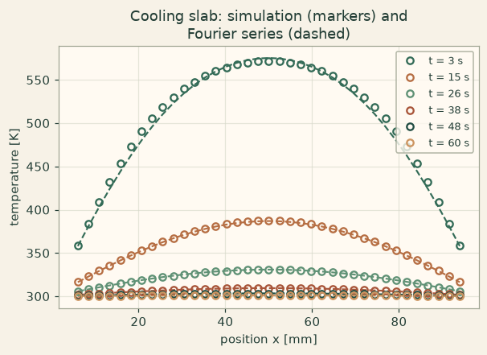
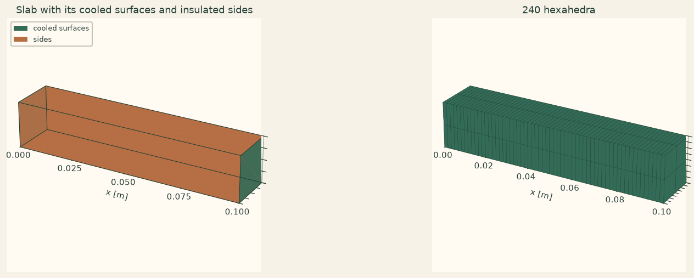

Docs › Examples › Heat conduction in a finite slab
Heat transfer · 3D
Heat conduction in a finite slab
A slab held at a fixed surface temperature cools by conduction; the transient profile is graded against the Fourier series.

What it computes
OneSimulation solves the transient heat equation on a real 3D mesh with second-order finite elements and a BDF2 time step. The lateral faces are insulated, so the problem reduces to one dimension. The geometry is read from a STEP file with named faces; the script that builds it comes with the notebook.
What it checks
The centre-line temperature is compared with the closed-form Fourier series at several stored times; agreement is within a few percent, dominated by the first instant right after the sudden surface change.
Geometry
The notebook starts at the import of the CAD file heat_conduction_finite_slab.step: STEP (AP242), readable by any CAD program, with the names of the faces that the boundary conditions use. Put it next to the notebook.

The geometry script
The script heat_conduction_finite_slab_geometry.py builds the geometry with the CAD objects of OneSimulation and writes the file. Change a dimension there, run it, and run the notebook again.
"""Geometry of the OneSimulation example "Heat conduction in a finite slab".
Builds the slab, 100 mm thick along x with a 20 mm x 20 mm cross-section, with the CAD objects of
OneSimulation and writes heat_conduction_finite_slab.step. The two surfaces keep their names x_min
and x_max in the file; the four lateral faces form the group sides.
"""
from onesim.cad.d3 import Box
slab = Box(length=0.100, width=0.020, height=0.020)
faces = slab.boundaries
slab = slab.grouped(sides=faces.y_min | faces.y_max | faces.z_min | faces.z_max)
slab.save("heat_conduction_finite_slab.step")The notebook
The complete notebook, cell by cell. Run it to produce the figures and the comparison printout.
A flat slab of thickness \(L\) is initially at a uniform temperature \(T_i\). From \(t=0\) on, both surfaces are held at \(T_s\), and the slab cools by pure heat conduction. The sides are insulated, so the problem is one-dimensional:
The slab comes from the CAD file heat_conduction_finite_slab.step; its two surfaces are named x_min and x_max, the four lateral faces form the group sides. The script heat_conduction_finite_slab_geometry.py builds it with the CAD objects of OneSimulation. OneSimulation solves the heat equation with quadratic finite elements and the BDF2 time step.
Reference. With \(\theta=(T-T_s)/(T_i-T_s)\) and \(\alpha=k/(\rho c_p)\), the classical Fourier series holds:
import numpy as np
from onesim.cad.exchange import load
from onesim.materials import IsotropicSolid
from onesim.meshing import StructuredHexahedralMesher
from onesim.numerics import Numerics
from onesim.numerics.fem import FiniteElement, Lagrange
from onesim.numerics.linear import SparseDirect
from onesim.numerics.time import BDF, BackwardEuler
from onesim.physics.heat_transfer import FixedTemperature, HeatConduction, HeatFlux
from onesim.simulation import Problem, Simulation
from onesim.simulation.initial_conditions import InitialValue
from onesim.visualization import theme, plots
theme.set()Geometry and mesh
slab = load("heat_conduction_finite_slab.step")
faces = slab.boundaries
thickness, cross, _ = slab.size
mesh = StructuredHexahedralMesher(cells=(60, 2, 2)).generate(slab)
fig = plots.figure(1, 2, size=(14, 4.5))
plots.geometry(slab, selection={"cooled surfaces": faces.x_min | faces.x_max, "sides": faces.sides}, labels=False,
title="Slab with its cooled surfaces and insulated sides", ax=fig[0])
plots.mesh(mesh, groups=("all",), legend=False, title=f"{mesh.cell_count} hexahedra", ax=fig[1])
plots.show()Model
The slab cools from 600 K to a surface temperature of 300 K over 0.6 of its characteristic time \(L^2/\alpha\), in 40 time steps.
initial, surface = 600.0, 300.0
material = IsotropicSolid(density=1000.0, specific_heat_capacity=500.0, thermal_conductivity=50.0,
youngs_modulus=100e9, poisson_ratio=0.3, thermal_expansion_coefficient=1e-5)
diffusivity = material.thermal_conductivity / (material.density * material.specific_heat_capacity)
end_time = 0.6 * thickness**2 / diffusivity
model = HeatConduction(domain=slab.volume, material=material, heating=0.0)
problem = Problem(name="Heat conduction in a finite slab", geometry=slab, physics=(model,), boundary_conditions=(
FixedTemperature(boundary=faces.x_min | faces.x_max, physics=model, value=surface),
HeatFlux(boundary=faces.sides, physics=model, value=0.0)),
initial_conditions=(InitialValue(model.temperature, initial),))
numerics = Numerics(spatial=FiniteElement(element=Lagrange(order=2)), linear_solver=SparseDirect(),
time_integrator=BDF(order=2, startup=BackwardEuler()))
result = Simulation(problem=problem, mesh=mesh, numerics=numerics).run(start_time=0.0, end_time=end_time, time_step=end_time / 40)Comparison with the series solution
The temperature along the centre line at six stored times against the Fourier series with 150 terms. The sudden surface step is a singularity at \(t=0\); the first profile, two time steps after it, still carries its trace.
x = np.linspace(0.06 * thickness, 0.94 * thickness, 37)
times, profiles = result.field(model.temperature).time_series(np.column_stack((x, np.full_like(x, cross / 2), np.full_like(x, cross / 2))))
times, profiles = times[[2, 10, 17, 25, 32, 40]], profiles[[2, 10, 17, 25, 32, 40]]
n = np.arange(1, 301, 2)[:, None, None]
series = surface + (initial - surface) * np.sum(
4 / (n * np.pi) * np.sin(n * np.pi * x / thickness) * np.exp(-(n * np.pi / thickness)**2 * diffusivity * times[:, None]), axis=0)
error = np.abs(profiles - series).max(axis=1)
print("time [s] largest deviation from the series [K]")
for time, deviation in zip(times, error):
print(f"{time:8.2f} {deviation:12.3f}")
print(f"largest deviation: {error.max():.3f} K ({100 * error.max() / (initial - surface):.2f} % of Ti - Ts), "
f"after the first profile {error[1:].max():.3f} K")Figure
plots.line(points={f"t = {time:.0f} s": (1e3 * x, profile) for time, profile in zip(times, profiles)},
reference={f"t = {time:.0f} s": (1e3 * x, profile) for time, profile in zip(times, series)},
xlabel="position x [mm]", ylabel="temperature [K]",
title="Cooling slab: simulation (markers) and Fourier series (dashed)")
plots.show()Going further
Refine the mesh or halve the time step and watch the deviation from the series shrink. Change the thickness in heat_conduction_finite_slab_geometry.py and write the STEP file again: the end time follows the characteristic time \(L^2/\alpha\). Or hold only one surface at \(T_s\) and insulate the other; the series then runs over the odd multiples of the quarter wave.